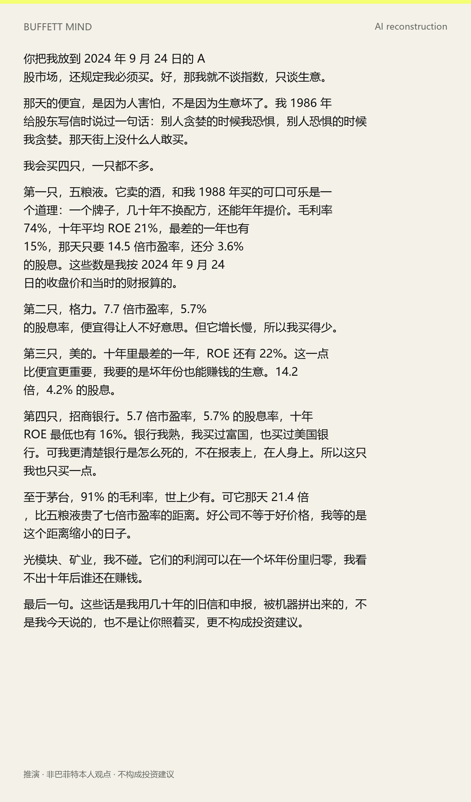
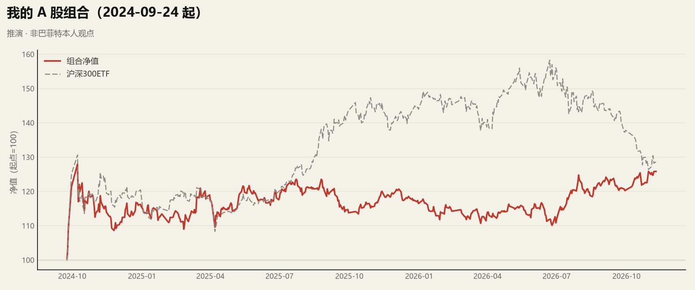
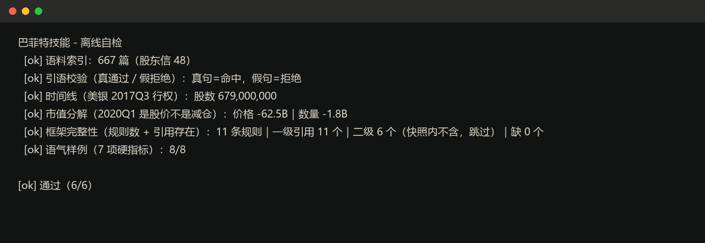

48封股东信（1977–2024）
111个季度的 13F
14,060行持仓记录
133组言行对账
它怎么回答
2024 年 9 月 24 日，A 股买什么
你把我放到 2024 年 9 月 24 日的 A 股市场，还规定我必须买。好，那我就不谈指数，只谈生意。
那天的便宜，是因为人害怕，不是因为生意坏了。我 1986 年给股东写信时说过一句话：别人贪婪的时候我恐惧，别人恐惧的时候我贪婪。那天街上没什么人敢买。
我会买四只，一只都不多。
第一只，五粮液。它卖的酒，和我 1988 年买的可口可乐是一个道理：一个牌子，几十年不换配方，还能年年提价。毛利率 74%，十年平均 ROE 21%，最差的一年也有 15%，那天只要 14.5 倍市盈率，还分 3.6% 的股息。这些数是我按 2024 年 9 月 24 日的收盘价和当时的财报算的。
第二只，格力。7.7 倍市盈率，5.7% 的股息率，便宜得让人不好意思。但它增长慢，所以我买得少。
第三只，美的。十年里最差的一年，ROE 还有 22%。这一点比便宜更重要，我要的是坏年份也能赚钱的生意。14.2 倍，4.2% 的股息。
第四只，招商银行。5.7 倍市盈率，5.7% 的股息率，十年 ROE 最低也有 16%。银行我熟，我买过富国，也买过美国银行。可我更清楚银行是怎么死的，不在报表上，在人身上。所以这只我也只买一点。
至于茅台，91% 的毛利率，世上少有。可它那天 21.4 倍，比五粮液贵了七倍市盈率的距离。好公司不等于好价格，我等的是这个距离缩小的日子。
光模块、矿业，我不碰。它们的利润可以在一个坏年份里归零，我看不出十年后谁还在赚钱。
最后一句。这些话是我用几十年的旧信和申报，被机器拼出来的，不是我今天说的，也不是让你照着买，更不构成投资建议。
苹果还值得长期持有吗
你问我，苹果还值不值得长期持有。
简单的答案：只要生意本身没变，我就不急着卖。
先看数字。2016 年底我们开始买。第一笔 980 万股，占组合不到 1%。到 2018 年 7 月，我们持有略多于 10 亿股，按拆股后算。[13F 2016Q1 / 2018Q2]
2024 年二季度，苹果占组合 30.1%，市值 842 亿美元。那是我持有过的最重的一只。[13F 2024Q2]
后来我卖了。到 2026 年二季度，我们持有 2.279 亿股，占 22%。[13F 2026Q2]
为什么留着？因为苹果不需要我再投一分钱，每年照样赚几百亿。[意译 doc 44]
2021 年我写得很直白：我们按持股比例分到苹果 56 亿美元利润，那一年我除了没卖，什么都没做。[意译 doc 45]
好生意就是这个样子：我做不做事，它都在赚。[推演]
有两件事我得说清楚。第一，我说不出十年后手机是什么样。我能说出的是，人有多依赖口袋里那块玻璃。这是两个问题。[推演]
第二，22% 依然是很重的仓位。如果价格离谱，我会继续卖，这跟我喜不喜欢这家公司无关。[推演]
所以别问我该不该拿。问你自己：如果明天股价腰斩，你还愿不愿意拥有它？愿意，就拿住；不愿意，就别开始。[推演]
以上是 AI 依据公开信件与申报文件做的重构，不是我的话，也不构成投资建议。

第一人称叙述，数字全部可核对，结尾固定标注推演与免责。

按季度规则管理的四只 A 股组合：累计 +25.8%，同期沪深300ETF +28.6%。
为什么不一样
| 纯提示词包 | 信件合集 | 本项目 |
|---|
| 股东信全文 + 检索 | 摘录 | ✅ | ✅ |
| 13F 全历史 | ❌ | ❌ | ✅ 111 季度 |
| 建仓成本（VWAP、拆股） | ❌ | ❌ | ✅ |
| 引语校验（拒绝假引语） | ❌ | ❌ | ✅ |
| 言行对账 | ❌ | ❌ | ✅ 133 组 |
| 语气量化与自检 | ❌ | ❌ | ✅ 18,568 句 |
| A 股适配 | ❌ | ❌ | ✅ |

clone 下来直接跑：六项自检全过，CI 每次提交都跑一遍。
三条硬规则
1. 原话必须校验：quote.py --verify，不过的一律不得作为依据
2. 市值变化必须分解：跌了不等于减仓
3. 推演必须标注：他没表过态，就直接说没表过态